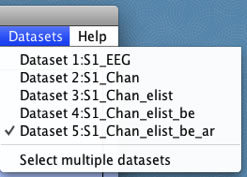
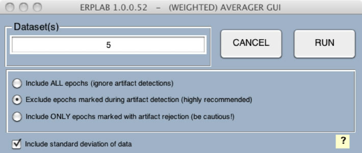
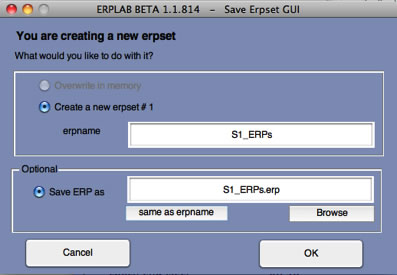
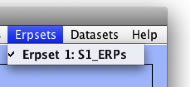

We are now (finally!) ready to create a set of averaged ERP waveforms. First make sure that the correct dataset is active ("S1_EEG_elist_be_ar", which has been epoched and scanned for artifacts with the Moving Window peak-to-peak threshold artifact detection function). Your Datasets menu should look something like the screenshot below.

Equivalent Script Command:
%Load S1_EEG_elist_be_ar.set
EEG = pop_loadset( 'filename', 'S1_EEG_elist_be_ar.set', 'filepath', '/Users/etfoo/Desktop/tutorial_script/');
%The following command uses Matlab's Current Folder
EEG = pop_loadset( 'filename', 'S1_EEG_elist_be_ar.set');
Now select ERPLAB > Compute Averaged ERP. This will bring up the very simple window shown below. You will normally average the data in the currently dataset, which is listed by default in the Dataset(s) field. If you want, you can specify multiple datasets and average across them as if all the epochs were stored in a single dataset. Here we will just average the epochs from one dataset, so click RUN to start the averaging process.

Hint: If you have a lot of channels or a high sampling rate (or both), you may find that the datasets are so large that Matlab becomes very slow (this is because only so much data can be stored in RAM, and Matlab may start storing some of the data in cache on your hard drive, which is very slow). In this case, you may wish to keep each trial block in a separate dataset and combine them into a single ERPset during averaging.
Normally you will want to exclude epochs marked as containing artifacts (marked with artifact flag 1 in the EventList), which can be achieved by selecting "Exclude epochs marked during artifact rejection." If you want to include all epochs (ignoring the artifact flags), you can instead select "Include ALL epochs." It is also possible to include only the epochs that contain artifacts, excluding epochs without artifacts, by selecting "Include ONLY epochs marked during artifact detection." (This is uncommon, but you might do this to see the effects that the artifacts have on the data.)
Equivalent Script Command:
%Compute Averaged ERP
%To average the data from dataset 5, whether or not it is selected, use the following:
ERP = pop_averager( ALLEEG , 'Criterion',1, 'DSindex', 5, 'Stdev', 'on' );
%To average the data from datasets 3-5, use the following:
ERP = pop_averager( ALLEEG , 'Criterion' ,1, 'DSindex' , 3:5, 'Stdev', 'on' );
%In all of these examples, the second-to-last argument specifies how artifacts should be treated:
% 1 – Exclude trials with artifacts (as in these examples)
% 0 – Include all trials (ignore artifact flags)
% 2 – Include ONLY trials with artifacts
%The last argument (0) is used to specify weighted versus unweighted averaging – it should ALWAYS be set to 0.
The averaging routine will print some useful information in the Matlab command window, as shown in the screenshot below. Specifically, it will show the percentage of trials that were excluded because of artifacts and because of invalid trials (e.g., epochs with boundary events within them; invalid trials should be rare). This information is provided both collapsed across bins and separately for each bin.
When the averaging routine is finished, it will display the window shown below, which allows you to name and save the ERPset that was created. This window is shown every time an ERPLAB function modifies or creates an ERPset. If one or more ERPsets were already loaded, you would have the option of overwriting the previously active ERPset or creating a new ERPset (you will usually want to create a new one – ERPsets are usually much smaller than datasets, and you will not usually run out of RAM because of ERPsets). In this case, however, no other ERPsets are present, so you will be creating a new ERPset. You should name the ERPset "S1_ERPs". This is the name that will be shown in the ERPsets menu. You will usually want to save the results of averaging in a file on disk, so select the Save ERP as button and give the file the same name as the ERPset name. You can do this easily by clicking the same as erpname button. The file will be saved in Matlab's current directory unless you either specify an alternative path or use the Browse button. You can click the OK button once you have set up the window as shown in the screenshot below.

You can now see the newly created ERPset in the ERPsets menu, as shown in the screenshot below.

Equivalent Script Command:
%Setname is S1_ERPs
%Filename is S1_ERPs.erp
%Path is /Users/etfoo/Desktop/tutorial_script/S1_ERPs.erp
%Note that you will need to replace the path with the actual location in your file system
ERP = pop_savemyerp(ERP, 'erpname', 'S1_ERPs.set', 'filename', 'S1_ERPs.erp', 'pathname', '/Users/etfoo/Desktop/tutorial_script/');
%The following command uses Matlab's Current Folder
ERP = pop_savemyerp(ERP, 'erpname', 'S1_ERPs.set', 'filename', 'S1_ERPs.erp');
| <<Artifact Detection | Table of Contents | Plotting ERP Waveforms>> |